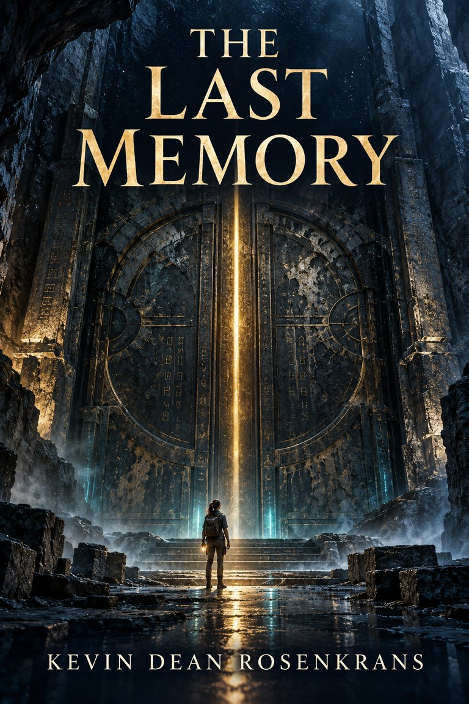

FICTION
The Last Memory
Preparing for releaseAdult philosophical / high-concept science fiction
One hundred and fifty thousand years after civilization falls, archaeologists awaken a preserved AI whose first question is whether the friend who saved him is still alive.